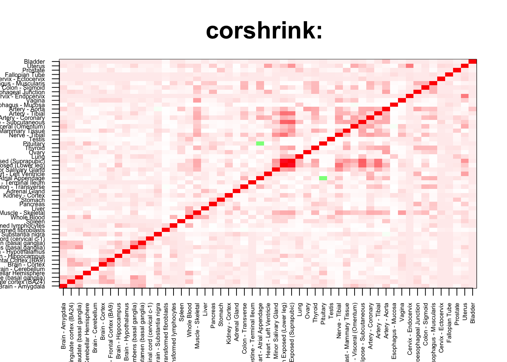

rm(list=ls())
corshrink_data <- get(load("../output/ash_cor_only_voom_pearson_normal_gtex_tissues.rda"))
cor_data <- get(load("../output/cor_tissues_non_ash_voom_pearson.rda"))common_samples <- get(load("../output/common_samples.rda"))
tissue_labels <- read.table(file = "../data/GTEX_V6/samples_id.txt")[,3]
#library(data.table)
#data <- data.frame(fread("../data/GTEX_V6/cis_gene_expression.txt"))
#matdata <- t(data[,-c(1,2)])
gene_names <- as.character(read.table(file = "../data/GTEX_V6/gene_names_GTEX_V6.txt")[,1])
gene_names_1 <- as.character(sapply(gene_names, function(x) return(strsplit(x, "[.]")[[1]][1])))
U <- unique(tissue_labels)tab <- array(0, dim(corshrink_data)[3])
skin_set <- grep("Skin", U)
for(m in 1:dim(corshrink_data)[3]){
temp <- corshrink_data[skin_set, skin_set,m]
temp1 <- corshrink_data[order_index[-(1:13)], order_index[-(1:13)],m]
tab[m] <- median(temp[row(temp) > col(temp)]) - median(temp1[row(temp1) > col(temp1)])
}
ordering_high <- order(tab, decreasing = TRUE)[1:100]
ordering_low <- order(tab, decreasing = FALSE)[1:100]top_gene <- gene_names_1[ordering_high[1]]
col=c(rev(rgb(seq(1,0,length=1000),1,seq(1,0,length=1000))),
rgb(1,seq(1,0,length=1000),seq(1,0,length=1000)))
image(as.matrix(corshrink_data[order_index,order_index, ordering_high[1]]),
col=col, main=paste0("corshrink: "), cex.main=2,
xaxt = "n", yaxt = "n", zlim=c(-1,1))
axis(1, at = seq(0, 1, length.out = 53), labels = U[order_index], las=2, cex.axis = 0.5)
axis(2, at = seq(0, 1, length.out = 53), labels = U[order_index], las=2, cex.axis = 0.5)
bottom_gene <- gene_names_1[ordering_low[1]]
col=c(rev(rgb(seq(1,0,length=1000),1,seq(1,0,length=1000))),
rgb(1,seq(1,0,length=1000),seq(1,0,length=1000)))
image(as.matrix(corshrink_data[order_index,order_index, ordering_low[1]]),
col=col, main=paste0("corshrink: "), cex.main=2,
xaxt = "n", yaxt = "n", zlim=c(-1,1))
axis(1, at = seq(0, 1, length.out = 53), labels = U[order_index], las=2, cex.axis = 0.5)
axis(2, at = seq(0, 1, length.out = 53), labels = U[order_index], las=2, cex.axis = 0.5)
high_skin_nonskin_genes <- gene_names_1[ordering_high]
low_skin_nonskin_genes <- gene_names_1[ordering_low]
write.table(cbind.data.frame(high_skin_nonskin_genes), quote = FALSE, file = "../utilities/skin_nonskin/high_skin_nonskin.txt", row.names = FALSE, col.names = FALSE)
write.table(cbind.data.frame(low_skin_nonskin_genes), quote = FALSE, file = "../utilities/skin_nonskin/low_skin_nonskin.txt", row.names = FALSE, col.names = FALSE)tab <- read.delim("../utilities/skin_nonskin/pathway_high.tab")
head(cbind.data.frame(tab$pathway, tab$q.value), 100)## tab$pathway
## 1 Wnt signaling pathway - Homo sapiens (human)
## 2 Transcription factor regulation in adipogenesis
## 3 Wnt Signaling Pathway and Pluripotency
## 4 wnt signaling pathway
## 5 DNA Damage Response (only ATM dependent)
## 6 E2F transcription factor network
## 7 inactivation of gsk3 by akt causes accumulation of b-catenin in alveolar macrophages
## 8 Focal Adhesion
## 9 Focal adhesion - Homo sapiens (human)
## 10 IGF-Core
## 11 cyclins and cell cycle regulation
## 12 IRS activation
## 13 segmentation clock
## 14 Synthesis of PC
## 15 IL-7
## 16 multi-step regulation of transcription by pitx2
## 17 G1 to S cell cycle control
## 18 Amino acid synthesis and interconversion (transamination)
## 19 p53 signaling pathway - Homo sapiens (human)
## 20 Cell cycle - Homo sapiens (human)
## 21 WNT-Ncore
## 22 Interleukin-17 signaling
## 23 FoxO signaling pathway - Homo sapiens (human)
## 24 Activation of PUMA and translocation to mitochondria
## 25 Validated transcriptional targets of AP1 family members Fra1 and Fra2
## 26 Signal attenuation
## 27 Cyclin D associated events in G1
## 28 G1 Phase
## 29 Direct p53 effectors
## 30 Synthesis of IP2, IP, and Ins in the cytosol
## 31 Retinoblastoma (RB) in Cancer
## 32 Hippo signaling pathway - Homo sapiens (human)
## 33 Mesodermal Commitment Pathway
## 34 Collagen formation
## 35 Presenilin action in Notch and Wnt signaling
## 36 p53 signaling pathway
## 37 Synthesis of PE
## 38 D-<i>myo</i>-inositol (1,4,5)-trisphosphate degradation
## 39 VEGFA-VEGFR2 Signaling Pathway
## 40 il-2 receptor beta chain in t cell activation
## 41 Inositol Phosphate Metabolism
## 42 Hepatitis C and Hepatocellular Carcinoma
## 43 Cell Cycle
## 44 Leucine Stimulation on Insulin Signaling
## 45 Negative regulation of TCF-dependent signaling by WNT ligand antagonists
## 46 Insulin resistance - Homo sapiens (human)
## 47 Nitrogen metabolism - Homo sapiens (human)
## 48 Leptin Insulin Overlap
## 49 Insulin Signalling
## 50 Pre-NOTCH Transcription and Translation
## 51 atm signaling pathway
## 52 Overview of nanoparticle effects
## 53 TP53 Regulates Transcription of Genes Involved in G2 Cell Cycle Arrest
## 54 TP53 Network
## 55 ATM Signaling Pathway
## 56 akt signaling pathway
## 57 Growth hormone receptor signaling
## 58 Coregulation of Androgen receptor activity
## 59 ATF-2 transcription factor network
## 60 Colorectal cancer - Homo sapiens (human)
## 61 Leptin
## 62 Wnt-beta-catenin Signaling Pathway in Leukemia
## 63 superpathway of D-<i>myo</i>-inositol (1,4,5)-trisphosphate metabolism
## 64 AMPK signaling pathway - Homo sapiens (human)
## 65 Longevity regulating pathway - multiple species - Homo sapiens (human)
## 66 Regulation of retinoblastoma protein
## 67 Wnt Signaling Pathway
## 68 Glycerophospholipid biosynthesis
## 69 Cell-Cell communication
## 70 Beta1 integrin cell surface interactions
## 71 Inositol Metabolism
## 72 Phospholipid metabolism
## 73 DNA Damage Response
## 74 Angiopoietin Like Protein 8 Regulatory Pathway
## 75 Adipogenesis
## 76 Collagen biosynthesis and modifying enzymes
## 77 Proximal tubule bicarbonate reclamation - Homo sapiens (human)
## 78 growth hormone signaling pathway
## 79 Glycosaminoglycan biosynthesis - heparan sulfate / heparin - Homo sapiens (human)
## 80 Alpha6Beta4Integrin
## 81 Focal Adhesion-PI3K-Akt-mTOR-signaling pathway
## 82 IL-7 Signaling Pathway
## 83 cell cycle: g1/s check point
## 84 Validated targets of C-MYC transcriptional repression
## tab$q.value
## 1 0.000621500
## 2 0.001247037
## 3 0.002574783
## 4 0.002574783
## 5 0.003073360
## 6 0.004525731
## 7 0.004525731
## 8 0.005363814
## 9 0.006547410
## 10 0.009092318
## 11 0.009092318
## 12 0.009092318
## 13 0.009151308
## 14 0.011314837
## 15 0.011314837
## 16 0.012542718
## 17 0.012542718
## 18 0.012542718
## 19 0.012542718
## 20 0.013413671
## 21 0.013413671
## 22 0.013725457
## 23 0.016113729
## 24 0.016113729
## 25 0.017690457
## 26 0.017690457
## 27 0.017690457
## 28 0.017690457
## 29 0.017690457
## 30 0.019542273
## 31 0.019842475
## 32 0.020426527
## 33 0.020426527
## 34 0.020426527
## 35 0.021710829
## 36 0.021710829
## 37 0.021710829
## 38 0.021710829
## 39 0.022889516
## 40 0.022929508
## 41 0.023162557
## 42 0.023162557
## 43 0.024325083
## 44 0.024489330
## 45 0.024489330
## 46 0.027852375
## 47 0.028905507
## 48 0.028905507
## 49 0.028905507
## 50 0.030600678
## 51 0.030600678
## 52 0.030600678
## 53 0.030600678
## 54 0.030600678
## 55 0.030600678
## 56 0.030600678
## 57 0.030600678
## 58 0.030600678
## 59 0.030600678
## 60 0.030683941
## 61 0.030683941
## 62 0.030683941
## 63 0.030683941
## 64 0.030683941
## 65 0.031746548
## 66 0.032605030
## 67 0.032605030
## 68 0.032605030
## 69 0.032605030
## 70 0.032605030
## 71 0.032605030
## 72 0.032605030
## 73 0.032605030
## 74 0.032605030
## 75 0.032605030
## 76 0.033006110
## 77 0.033006110
## 78 0.033006110
## 79 0.035413984
## 80 0.035490776
## 81 0.035490776
## 82 0.036497328
## 83 0.036497328
## 84 0.036629250tab <- read.delim("../utilities/skin_nonskin/GO_high.tab")
head(cbind.data.frame(tab$term_name, tab$q.value), 100)## tab$term_name
## 1 single-organism cellular process
## 2 cellular response to fluid shear stress
## 3 regulation of signaling
## 4 regulation of cell communication
## 5 response to nutrient levels
## 6 tissue development
## 7 response to hyperoxia
## 8 response to increased oxygen levels
## 9 single-organism biosynthetic process
## 10 response to extracellular stimulus
## 11 positive regulation of cellular process
## 12 regulation of signal transduction
## 13 single-multicellular organism process
## 14 regulation of Wnt signaling pathway
## 15 regulation of embryonic development
## 16 response to fluid shear stress
## 17 response to corticosteroid
## 18 cytoplasm
## 19 system development
## 20 single-organism metabolic process
## 21 positive regulation of multicellular organismal process
## 22 positive regulation of biological process
## 23 protein domain specific binding
## 24 multicellular organism development
## 25 regulation of cell cycle process
## 26 regulation of multicellular organismal process
## 27 enzyme binding
## 28 regulation of biological process
## 29 anatomical structure development
## 30 regulation of mitotic cell cycle
## 31 regulation of developmental growth
## 32 regulation of cell differentiation
## 33 regulation of reactive oxygen species metabolic process
## 34 regulation of developmental process
## 35 cell death
## 36 animal organ development
## 37 reactive oxygen species metabolic process
## 38 G1/S transition of mitotic cell cycle
## 39 response to fluoride
## 40 regulation of multicellular organismal development
## 41 regulation of response to stimulus
## 42 neurogenesis
## 43 cartilage development involved in endochondral bone morphogenesis
## 44 cell motility
## 45 localization of cell
## 46 regulation of localization
## 47 cell cycle G1/S phase transition
## 48 oxoacid metabolic process
## 49 embryo development
## 50 response to vitamin
## 51 positive regulation of catabolic process
## 52 phosphate-containing compound metabolic process
## 53 movement of cell or subcellular component
## 54 cytoplasmic part
## 55 organic acid metabolic process
## 56 cell differentiation
## 57 small molecule metabolic process
## 58 cellular developmental process
## 59 regulation of phosphorus metabolic process
## 60 regulation of cell cycle
## 61 phosphorylation
## 62 response to drug
## 63 regulation of cellular process
## 64 somitogenesis
## 65 phosphorus metabolic process
## 66 positive regulation of cell communication
## 67 positive regulation of signaling
## 68 midbrain morphogenesis
## 69 direct ossification
## 70 intramembranous ossification
## 71 single organism signaling
## 72 cell surface receptor signaling pathway involved in cell-cell signaling
## 73 positive regulation of developmental process
## 74 mitotic G1/S transition checkpoint
## 75 G1 DNA damage checkpoint
## 76 negative regulation of cellular process
## 77 taurine metabolic process
## 78 negative regulation of mesoderm development
## 79 response to nutrient
## 80 Wnt signaling pathway
## 81 response to X-ray
## 82 developmental growth
## 83 cell-cell signaling by wnt
## 84 response to organonitrogen compound
## 85 response to external stimulus
## 86 regulation of protein metabolic process
## 87 circulatory system development
## 88 response to chemical
## 89 cell migration
## 90 epidermis development
## 91 alkanesulfonate metabolic process
## 92 interleukin-17 receptor activity
## 93 negative regulation of cell communication
## 94 positive regulation of cell differentiation
## 95 negative regulation of signaling
## 96 bone morphogenesis
## 97 response to organic substance
## 98 response to ionizing radiation
## 99 somite development
## 100 neuron differentiation
## tab$q.value
## 1 3.524908e-07
## 2 7.424163e-04
## 3 6.685692e-04
## 4 9.482819e-04
## 5 9.482819e-04
## 6 6.879586e-04
## 7 6.879586e-04
## 8 9.482819e-04
## 9 6.879586e-04
## 10 6.879586e-04
## 11 1.100978e-03
## 12 1.100978e-03
## 13 5.949175e-04
## 14 2.816371e-03
## 15 2.816371e-03
## 16 8.931363e-04
## 17 2.816371e-03
## 18 2.138416e-03
## 19 1.479654e-03
## 20 8.507284e-04
## 21 2.424767e-03
## 22 1.494915e-03
## 23 2.151331e-03
## 24 1.510740e-03
## 25 4.911575e-03
## 26 1.905812e-03
## 27 2.151331e-03
## 28 1.051739e-03
## 29 1.051739e-03
## 30 4.997280e-03
## 31 4.223279e-03
## 32 4.223279e-03
## 33 4.997280e-03
## 34 2.170969e-03
## 35 2.170969e-03
## 36 2.170969e-03
## 37 2.408874e-03
## 38 5.414754e-03
## 39 4.917932e-03
## 40 4.917932e-03
## 41 2.466465e-03
## 42 5.414754e-03
## 43 2.480094e-03
## 44 1.390902e-03
## 45 1.390902e-03
## 46 2.569266e-03
## 47 4.917932e-03
## 48 4.917932e-03
## 49 4.917932e-03
## 50 4.917932e-03
## 51 6.053945e-03
## 52 4.918791e-03
## 53 2.802585e-03
## 54 5.485717e-03
## 55 2.802585e-03
## 56 5.319559e-03
## 57 2.889525e-03
## 58 2.889525e-03
## 59 7.337900e-03
## 60 5.584710e-03
## 61 7.652241e-03
## 62 3.144133e-03
## 63 3.144133e-03
## 64 3.144133e-03
## 65 3.144133e-03
## 66 7.652241e-03
## 67 6.746681e-03
## 68 3.309793e-03
## 69 6.746681e-03
## 70 7.652241e-03
## 71 2.636664e-03
## 72 7.042885e-03
## 73 7.042885e-03
## 74 7.042885e-03
## 75 8.391323e-03
## 76 7.532433e-03
## 77 7.532433e-03
## 78 8.391323e-03
## 79 4.499609e-03
## 80 8.391323e-03
## 81 8.391323e-03
## 82 3.136929e-03
## 83 7.534415e-03
## 84 4.664358e-03
## 85 3.136929e-03
## 86 8.651816e-03
## 87 7.912976e-03
## 88 3.136929e-03
## 89 4.939874e-03
## 90 8.766937e-03
## 91 5.320767e-03
## 92 1.468532e-02
## 93 9.368163e-03
## 94 9.368163e-03
## 95 8.970823e-03
## 96 9.261667e-03
## 97 6.112860e-03
## 98 9.709768e-03
## 99 1.023963e-02
## 100 1.023963e-02tab <- read.delim("../utilities/skin_nonskin/pathway_low.tab")## Warning in read.table(file = file, header = header, sep = sep, quote =
## quote, : incomplete final line found by readTableHeader on '../utilities/
## skin_nonskin/pathway_low.tab'head(cbind.data.frame(tab$pathway, tab$q.value), 100)## tab$pathway tab$q.value
## 1 SUMOylation of DNA damage response and repair proteins 0.0771933
## 2 SUMO E3 ligases SUMOylate target proteins 0.0771933tab <- read.delim("../utilities/skin_nonskin/GO_low.tab")
head(cbind.data.frame(tab$term_name, tab$q.value), 100)## tab$term_name tab$q.value
## 1 hemoglobin complex 0.002244557
## 2 oxygen transporter activity 0.002316795
## 3 gas transport 0.029251096
## 4 regulation of receptor internalization 0.050056592
## 5 interferon-beta production 0.050056592
## 6 oxygen binding 0.032683841
## 7 transition metal ion binding 0.015048933
## 8 receptor internalization 0.520078140
## 9 condensed nuclear chromosome 0.021771646
## 10 meiosis I 0.304157130This R Markdown site was created with workflowr